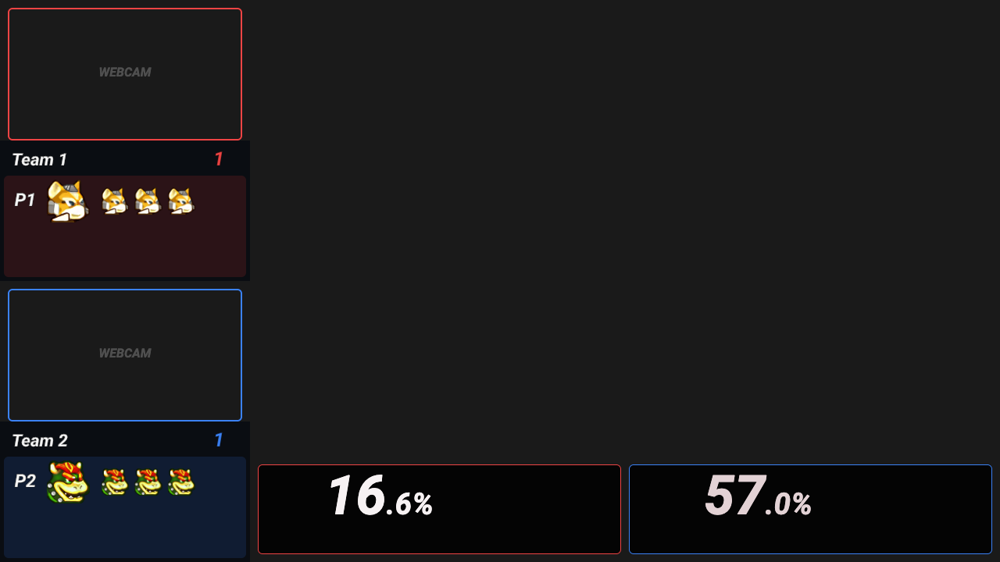

Singles & doubles
Every element works for all four players.


Doubles overlays and live fight stats
Every Player 1/2 element can show any of the four doubles players (Styling → Player); there are team elements, team conditions, and live fight stats for singles and doubles.
How to set it up
Doubles overlays and live fight stats
Every Player 1/2 element can show any of the four doubles players (Styling → Player); there are team elements, team conditions, and live fight stats for singles and doubles.
How doubles works:
- Team 1 is the team with the lowest port in the set's first game (colour doesn't matter) and keeps its place for the whole set, even when teams swap colours. Within a team the lower port is Player 1. Wrong way round? Dashboard → Fix set… → Swap teams / Swap players in a team (singles: Swap Player 1 ↔ 2) — names, score, overlays and the striking phones follow; when loading replays there, pick which team is Team 1 before loading.
- Team names: typed on the Dashboard (or at Start Set), else "Tag & Tag" when both players have a tag, else Team 1 / Team 2. Start Set (doubles) also takes each player's tag — overlays and the phones use them for the whole set.
- Player elements are listed once in Add Element (Player HUD, Player Controller Inputs, Player Slippi Rank…); Styling → Player picks who it shows: Current Player (you), Player 1 / Team 1 · Player 1, Player 2 / Team 2 · Player 1, Team 1 · Player 2, Team 2 · Player 2 — only the players the element exists for.
- Add Element → "Doubles & Ports": team names (rename on the Dashboard), team stocks, your/opponent team, port numbers, and fight stats.
- Visibility → Doubles: Doubles Game, second-player stocks/alive/combo/off-stage, team alive, and "Team N Stocks <= X".
- Teammates on the same character: the higher port is drawn a bit lighter, so viewers can tell them apart.
- Demo overlay "Doubles (game right, webcams left)": the 4:3 game on the right; on the left per team a webcam frame (put your camera source under it in OBS), team name + set score and a row per player (port, character, stocks); percents with names under them along the bottom of the game.
Fight stats (live, singles and doubles, per game and for the whole set):
- Damage dealt — percent dealt to opponents (hits on a teammate don't count).
- KOs — credited to whoever hit the player last.
- Avg KO % — on average, at what percent this player KOs opponents.
- Avg death % — on average, at what percent this player dies (self-destructs included).
- Team versions add up both players; in singles a team is just that player.